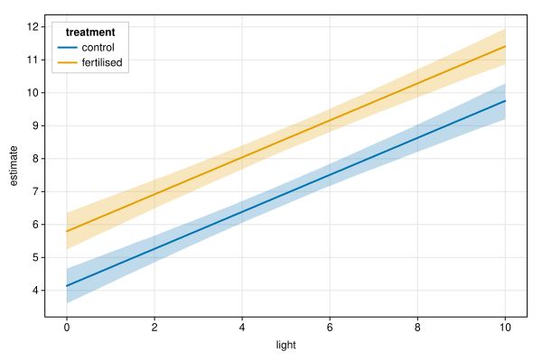
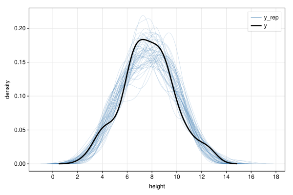

A report with Quarto
This tutorial writes a short report on a regression model with Quarto: one file holds the text and the Julia code, and Quarto renders it to a web page and to PDFs. The report states the model and its priors, gives the estimates in the text and in a table, and shows the effects and the checks as figures. Every number, table and figure comes from the fit, so the report is rebuilt from the data with one command.
The figures and tables go into each output in its own form: SVG and HTML tables in the web page; TikZ pictures and booktabs tables in a PDF made with LaTeX; CeTZ drawings and Typst tables in a PDF made with Typst. In the PDFs the figures are typeset with the document, so their text is in the document's font.
You need PracticalBayesianRegression and Quarto 1.11 or later (download). Quarto runs the Julia code through its julia engine, which it installs on first use, and comes with Typst (0.15 from Quarto 1.11; the CeTZ figures need it). A PDF made with LaTeX also needs a LaTeX installation (quarto install tinytex gives one).
The analysis
We simulate the height of 100 plants, grown under different amounts of light, half of them with fertiliser. The true effects are 0.6 cm per unit of light and 1.5 cm for fertiliser.
using PracticalBayesianRegression, Random
rng = Xoshiro(7)
n = 100
light = round.(10 .* rand(rng, n); digits = 1)
treatment = rand(rng, ["control", "fertilised"], n)
height = 4 .+ 0.6 .* light .+ 1.5 .* (treatment .== "fertilised") .+ 1.2 .* randn(rng, n)
plants = (; height, light, treatment)
fit = brm(@bf(height ~ light + treatment), plants; seed = 1) Family gaussian
Links mu = identity; sigma = log
Formula height ~ light + treatment
Data 100 observations
Draws 4 chains × 2000 iterations (warmup 1000, thin 1) → 4000 draws
Sampler nuts · 7 ms per chain
── Regression Coefficients ────────────────────────────────────────────────────────────────
╭─────────────────────┬───────────────────────────────────────────────────────────────────╮
│ │ Estimate Est.Error l-95% CI u-95% CI Rhat Bulk_ESS Tail_ESS │
├─────────────────────┼───────────────────────────────────────────────────────────────────┤
│ Intercept │ 4.14 0.27 3.61 4.66 1.00 4643 2949 │
│ light │ 0.56 0.04 0.47 0.65 1.00 4430 2987 │
│ treatmentfertilised │ 1.65 0.24 1.18 2.14 1.00 4130 2869 │
╰─────────────────────┴───────────────────────────────────────────────────────────────────╯
── Further Distributional Parameters ────────────────────────────────────────
╭───────┬───────────────────────────────────────────────────────────────────╮
│ │ Estimate Est.Error l-95% CI u-95% CI Rhat Bulk_ESS Tail_ESS │
├───────┼───────────────────────────────────────────────────────────────────┤
│ sigma │ 1.18 0.08 1.03 1.36 1.00 4311 3139 │
╰───────┴───────────────────────────────────────────────────────────────────╯
✓ Rhat ≤ 1.01 · ✓ ESS ≥ 400 · ✓ no divergences · ✓ treedepth < 10 · ✓ E-BFMI ≥ 0.3
The report needs four kinds of thing from this fit.
Tables. summary_table gives the summary above as a table, and prior_table the priors, which the model took from brms's defaults and a report should state. With format = :embed each is ready for a Quarto document, in all three forms. Here is the Markdown form, to see what they hold:
print(summary_table(fit; format = :markdown))| | **Estimate** | **Est.Error** | **l-95% CI** | **u-95% CI** | **Rhat** | **Bulk\_ESS** | **Tail\_ESS** |
|:--------------------------------------|-------------:|--------------:|-------------:|-------------:|---------:|--------------:|--------------:|
| **Regression Coefficients** | ──────────── | ───────────── | ──────────── | ──────────── | ──────── | ───────────── | ───────────── |
| **Intercept** | 4.14 | 0.27 | 3.61 | 4.66 | 1.00 | 4643 | 2949 |
| **light** | 0.56 | 0.04 | 0.47 | 0.65 | 1.00 | 4430 | 2987 |
| **treatmentfertilised** | 1.65 | 0.24 | 1.18 | 2.14 | 1.00 | 4130 | 2869 |
| **Further Distributional Parameters** | ──────────── | ───────────── | ──────────── | ──────────── | ──────── | ───────────── | ───────────── |
| **sigma** | 1.18 | 0.08 | 1.03 | 1.36 | 1.00 | 4311 | 3139 |print(prior_table(fit; format = :markdown))| **Prior** | **Class** | **Coef** | **Group** | **Dpar** | **Source** |
|:------------------------|:----------|:--------------------|:----------|:---------|:-----------|
| student\_t(3, 7.6, 2.5) | Intercept | | | | default |
| (flat) | b | light | | | default |
| (flat) | b | treatmentfertilised | | | default |
| student\_t(3, 0, 2.5) | sigma | | | | default |Figures. The plotting functions return figures; embed makes one ready for a Quarto document. (This page loads CairoMakie for other pages, so it passes backend = :pbp; you do not need to.)
plot_effects(fit, :light => :treatment; backend = :pbp)
pp_check(fit; backend = :pbp)
Numbers for the text come from fixef (the coefficients):
using Printf
fe = Dict(r.variable => r for r in fixef(fit))
f2(x) = @sprintf("%.2f", x)
f2(fe["light"].estimate), f2(fe["light"].lower), f2(fe["light"].upper)("0.56", "0.47", "0.65")Checks: the convergence diagnostics of every parameter, from posterior_summary, and the sampler's divergent transitions, from nuts_params:
rows = posterior_summary(fit)
max_rhat = maximum(r.rhat for r in rows)
min_ess = minimum(min(r.bulk_ess, r.tail_ess) for r in rows)
divergent = round(Int, sum(nuts_params(fit)["divergent__"]))
f2(max_rhat), round(Int, min_ess), divergent("1.00", 2828, 0)The report
Put the following in a file report.qmd. The header asks for three outputs (a web page, a PDF made with Typst and one made with LaTeX, which loads TikZ for the figures) and the julia engine. Code cells are marked {julia}; options at the top of a cell, after #|, label and caption its table or figure, and echo: false in the header hides the code. Inline code, $`{julia} expr`$, puts a value into a sentence.
---
title: "Plant height, light and fertiliser"
format:
html: default
typst: default
pdf:
output-file: report-latex.pdf
include-in-header:
text: \usepackage{tikz}
engine: julia
execute:
echo: false
---
```{julia}
#| output: false
using PracticalBayesianRegression, Random, Printf
rng = Xoshiro(7)
n = 100
light = round.(10 .* rand(rng, n); digits = 1)
treatment = rand(rng, ["control", "fertilised"], n)
height = 4 .+ 0.6 .* light .+ 1.5 .* (treatment .== "fertilised") .+ 1.2 .* randn(rng, n)
plants = (; height, light, treatment)
fit = brm(@bf(height ~ light + treatment), plants; seed = 1)
f2(x) = @sprintf("%.2f", x)
fe = Dict(r.variable => r for r in fixef(fit))
rows = posterior_summary(fit)
```
## Model
We regressed the height (cm) of `{julia} nobs(fit)` plants on light and
fertiliser treatment with a Gaussian model, `height ~ light + treatment`,
with the default priors of brms (@tbl-priors). Four chains of
`{julia} fit.iter` iterations, the first `{julia} fit.warmup` of them
warm-up, gave `{julia} ndraws(fit)` draws from the posterior.
```{julia}
#| label: tbl-priors
#| tbl-cap: "Priors."
prior_table(fit; format = :embed)
```
## Results
Height increased by `{julia} f2(fe["light"].estimate)` cm per unit of
light (95% credible interval `{julia} f2(fe["light"].lower)` to
`{julia} f2(fe["light"].upper)`), and fertilised plants were
`{julia} f2(fe["treatmentfertilised"].estimate)` cm taller
(`{julia} f2(fe["treatmentfertilised"].lower)` to
`{julia} f2(fe["treatmentfertilised"].upper)`; @tbl-summary, @fig-effects).
```{julia}
#| label: tbl-summary
#| tbl-cap: "Posterior summary: means, standard deviations and 95% credible intervals, with convergence diagnostics."
summary_table(fit; format = :embed)
```
```{julia}
#| label: fig-effects
#| fig-cap: "Expected height against light, by treatment, with 95% credible bands."
embed(plot_effects(fit, :light => :treatment))
```
## Checks
The chains converged (largest $\hat{R}$
`{julia} f2(maximum(r.rhat for r in rows))`, smallest effective sample size
`{julia} round(Int, minimum(min(r.bulk_ess, r.tail_ess) for r in rows))`,
`{julia} round(Int, sum(nuts_params(fit)["divergent__"]))` divergent
transitions), and data simulated from the fitted model resemble the
observed heights (@fig-ppcheck).
```{julia}
#| label: fig-ppcheck
#| fig-cap: "Posterior predictive check: the density of the observed heights (dark) and of 50 data sets simulated from the posterior."
embed(pp_check(fit))
```Rendering
In a terminal, in the folder of report.qmd:
quarto render report.qmdThis runs the code once and writes report.html, report.pdf (Typst) and report-latex.pdf (LaTeX); quarto render report.qmd --to typst makes just one of them. quarto preview report.qmd opens the web page and re-renders it whenever the file is saved. The first render starts a Julia process and compiles the package, so it takes longer than the ones after it: Quarto keeps the Julia process running between renders.
Change the data, the formula or a prior and render again: the text, the tables and the figures all follow.
Next steps
- A figure cell without
embed, such aspp_check(fit), also works: it shows the figure as an SVG image in every output, its text in PracticalBayesPlot's font. - For a document written directly in LaTeX or Typst, without Quarto, see Put results in a LaTeX or Typst document.
- Other figures: Plot a fit.